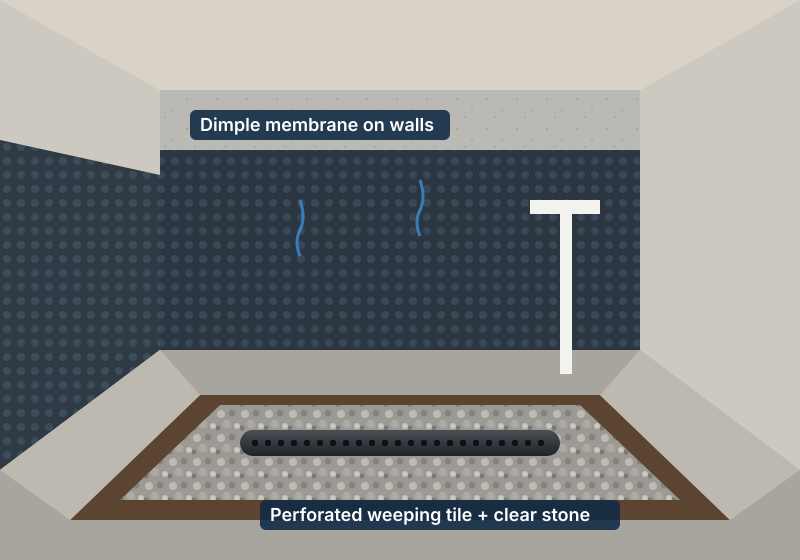
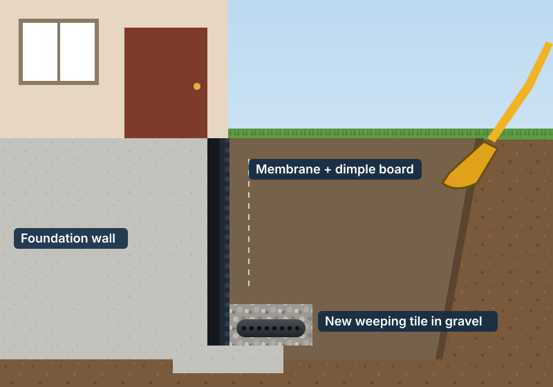
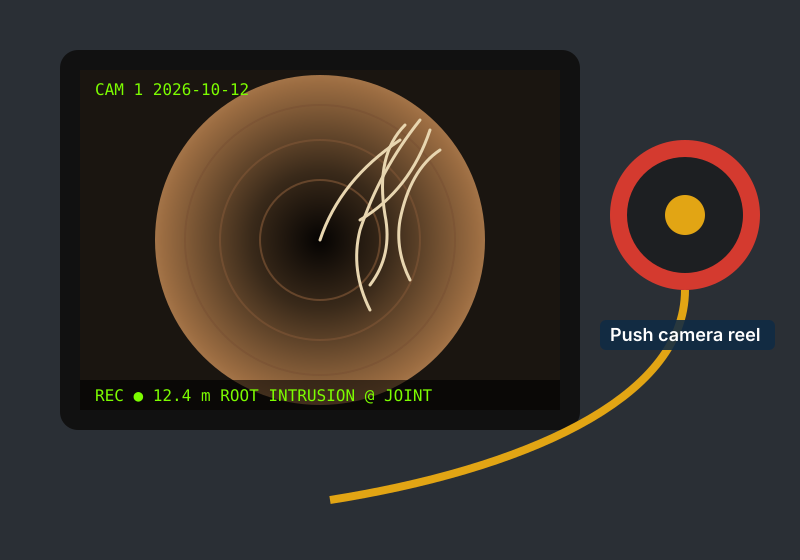
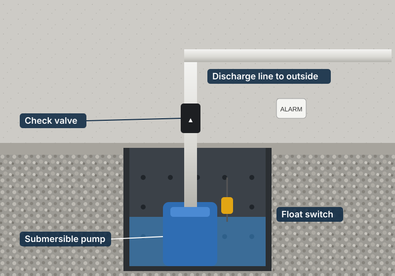
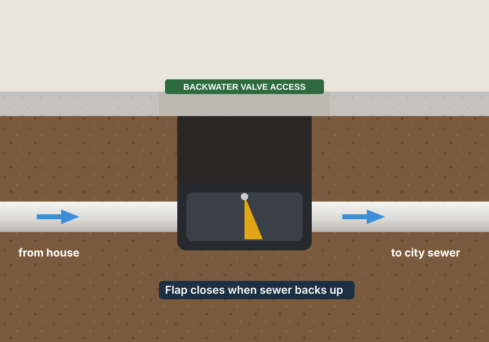
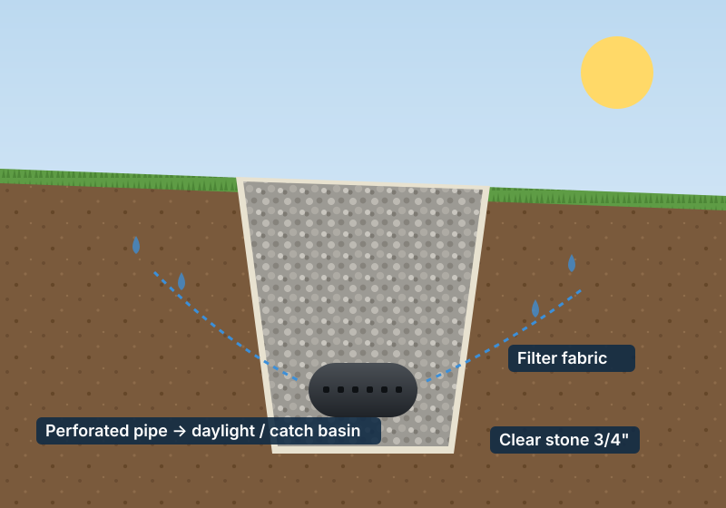
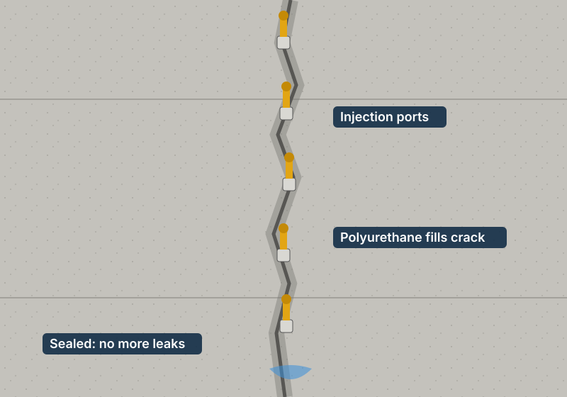
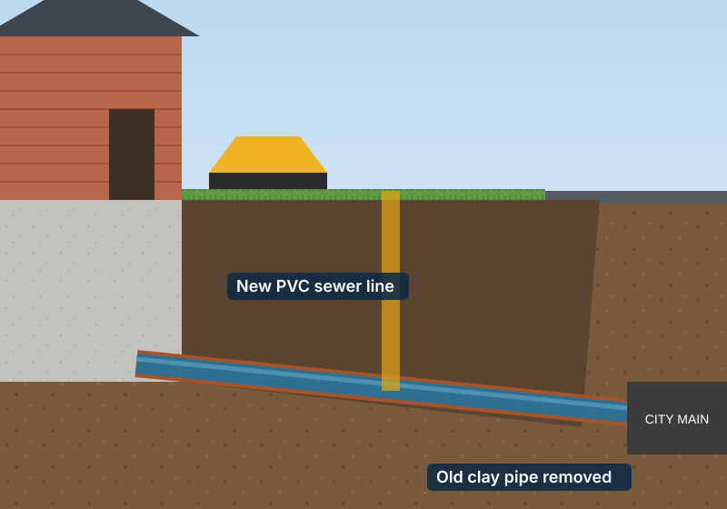

Toronto · Mississauga · Brampton · Vaughan · Markham · Durham
Basement waterproofing & drain prices in Toronto and the GTA
Honest, up-to-date price ranges for interior and exterior waterproofing, sump pumps, backwater valves and sewer drains — so you know what to expect before anyone comes to your door.
- Prices in CAD, incl. labour & materials
- Updated for 2026
- Free on-site inspection
Approximate price list
Typical ranges we see across Toronto and the GTA in 2026, including labour, materials, permits where needed and clean-up. HST is extra. Your final price depends on access, depth, soil and what we find on site.

Interior waterproofing
We cut the basement floor along the walls, install a perforated weeping tile in clear stone, put a dimple membrane on the walls and route the water to a sump pump. No digging outside — works in winter and for houses with tight side yards, driveways or decks.
Typical full basement (100–140 ft): $10,000 – $20,000
| Service | Unit | Price range |
|---|---|---|
| Interior weeping tile system (floor cut, pipe, stone, membrane, concrete) | per linear ft | $90 – $160 |
| One wall only (approx. 25–40 ft) | per wall | $3,000 – $6,500 |
| Foundation crack injection (polyurethane / epoxy) | per crack | $600 – $1,200 |
| New sump pit + pump + discharge line | each | $2,200 – $4,500 |
| Sump pump replacement (existing pit) | each | $700 – $1,500 |
| Battery back-up sump pump | each | $900 – $2,000 |
| Mainline backwater valve | each | $1,800 – $3,500 |
| Floor drain repair / replacement | each | $800 – $2,500 |
| Parging / sealing interior walls | per sq ft | $8 – $15 |
| Remove drywall, insulation & finishes before work | per linear ft | $15 – $40 |

Exterior waterproofing
We excavate down to the footing, clean and repair the wall, apply a rubberized membrane plus dimple board, replace the old clay weeping tile with new perforated pipe in clear stone, and backfill. Stops water before it reaches the wall — the most complete fix.
Typical one wall: $8,000 – $15,000 · Full house: $25,000 – $55,000+
| Service | Unit | Price range |
|---|---|---|
| Excavation, membrane, dimple board, new weeping tile, backfill | per linear ft | $180 – $320 |
| Hand dig (no machine access, narrow side yards) | per linear ft | + $40 – $90 |
| Remove & replace interlock / walkway | per sq ft | $25 – $45 |
| Cut & repour concrete / asphalt driveway section | per sq ft | $15 – $35 |
| Exterior crack repair (dig + membrane) | per crack | $1,500 – $3,500 |
| Window well install / replace (with drain) | each | $900 – $2,500 |
| French drain / yard drainage | per linear ft | $50 – $120 |
| Downspout disconnection & extension | each | $250 – $700 |
| Regrading around foundation | per linear ft | $20 – $60 |
| Catch basin installation | each | $1,500 – $4,000 |

Drains & main sewer line
Older Toronto homes often still have clay or cast-iron sewer lines that crack, shift and fill with tree roots. We start with a camera inspection, then clean, repair or replace — open trench or trenchless.
Typical main sewer replacement: $10,000 – $25,000
| Service | Unit | Price range |
|---|---|---|
| Drain camera inspection + video report | each | $250 – $450 |
| Drain snaking / unclogging (main line) | each | $200 – $450 |
| Hydro-jet cleaning & root removal | each | $500 – $1,100 |
| Spot repair of main drain (one section) | each | $3,000 – $8,000 |
| Main sewer line replacement (open trench) | per linear ft | $200 – $450 |
| Trenchless pipe lining (CIPP) | per linear ft | $180 – $350 |
| Pipe severance (foundation drain off sanitary) | each | $4,000 – $9,000 |
| New cleanout installation | each | $600 – $1,500 |
| Underground storm / sanitary line repair | per linear ft | $150 – $350 |
| Emergency / after-hours call | surcharge | + $150 – $350 |
These are approximate market ranges for information only, not a quote. Every basement is different — book a free inspection for an exact written price.
Quick cost estimator
Pick your job, enter the length of wall and add extras. You will get a rough range in seconds.
Typical jobs
How the most common jobs look on site. Click a picture to enlarge.





What changes the price
Depth & length
Most GTA basements are 6–8 ft deep. Deeper footings and longer walls mean more digging, stone and membrane.
Access
Narrow side yards between houses often need hand digging. Decks, porches, driveways and interlock add removal and restoration costs.
Finished basement
For interior work, drywall, flooring and insulation along the walls must be removed and later replaced.
Condition of drains
Collapsed clay weeping tile or a root-filled sewer line can turn a simple job into a larger repair. A camera inspection tells you upfront.
Season
Exterior work is easiest from April to November. Winter digging is possible but may cost more; interior work runs all year.
Permits
Plumbing permits are required for backwater valves, sump pumps and sewer work in Toronto. We handle them — the fee is included in our ranges.
Frequently asked questions
Interior or exterior waterproofing — which one do I need?
Exterior waterproofing stops water before it touches the wall and is the most complete solution, but costs more and needs room to dig. Interior waterproofing manages water that gets in and sends it to a sump pump — it is cheaper, faster and works where you can't dig outside. We'll recommend one after an inspection.
How long does the work take?
A single wall from outside is usually 1–3 days. A full interior system takes 3–5 days. Backwater valves and sump pumps are typically done in one day.
Does the City of Toronto give rebates?
Yes. The Basement Flooding Protection Subsidy Program can cover part of the cost of a backwater valve, sump pump and pipe severance for eligible homes. Several GTA municipalities (e.g. Mississauga, Markham, Vaughan) have similar programs. Amounts and rules change, so check your city's website before booking.
Is there a warranty?
Waterproofing jobs come with a transferable warranty — typically 15–25 years on exterior membrane and weeping tile, and 1–5 years on pumps and mechanical parts.
Are the prices on this page final?
No — they are typical ranges to help you budget. The exact price comes after a free on-site inspection, and it's always written down before any work starts.
Get a free inspection & exact quote
We serve Toronto, North York, Scarborough, Etobicoke, East York, Mississauga, Brampton, Vaughan, Richmond Hill, Markham, Oakville, Pickering, Ajax and Whitby.
- Phone(416) 000-0000
- Emailinfo@example.com
- HoursMon–Sat, 7am–7pm · 24/7 emergency